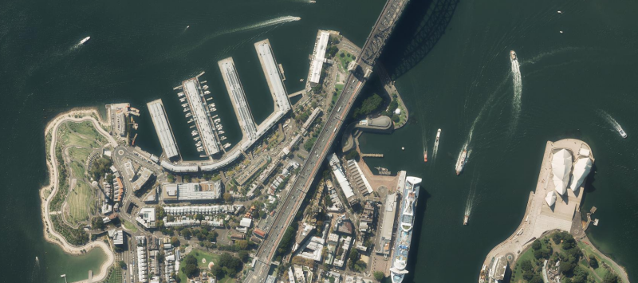

Have you ever wanted to save out a super high resolution satellite photo from Google Maps or similar? Perhaps you've screenshotted satellite photos from your browser and then merged them together in your favourite photo editor like Photoshop or The GIMP. Well, in New South Wales, Australia, there's a NSW GIS (geographic information service) government service known as NSW GIS SIX Maps.

Doing this manually is quite an annoying task, but here's an automatic script that will do it for you right in your browser, and will save up to a 10,000 by 10,000 pixel resolution image to your computer. Yep, no need to download any further software. There are a couple of prerequisites, but it should work on almost any computer. Just follow the step by step below to merge the tiles together. First, make sure you have Google Chrome as your browser.
- Go to http://maps.six.nsw.gov.au/
- Open up the browser inspector (Press
ctrl-shift-ion Chrome), and click on the "Console" tab. This is where you will copy, paste, and run the scripts. - Zoom to desired max resolution level (there are 20 stops available) to the top left of the bounding rectangle of the region you'd like to stitch.
- Copy, paste and hit enter to run the code below.
This code snippet will allow your browser to use more system resources required to perform this task.
performance.setResourceTimingBufferSize(1000);
You should see "undefined" if it completes successfully.
- Pan a little top-left to load another tile, this'll set the top-left boundary coordinate.
- Pan to the bottom-right coordinate, triggering a tile-load in the process. This'll set the bottom-right boundary coordinate.
- Copy, paste, and hit enter to run the code in below.
This will give your browser permission to save the resulting image to your computer. For the curious, it's called a Polyfill and here is an explanation by the FileSaver author about what it does.
/* FileSaver.js
* A saveAs() FileSaver implementation.
* 1.3.2
* 2016-06-16 18:25:19
*
* By Eli Grey, http://eligrey.com
* License: MIT
* See https://github.com/eligrey/FileSaver.js/blob/master/LICENSE.md
*/
/*global self */
/*jslint bitwise: true, indent: 4, laxbreak: true, laxcomma: true, smarttabs: true, plusplus: true */
/*! @source http://purl.eligrey.com/github/FileSaver.js/blob/master/FileSaver.js */
var saveAs = saveAs || (function(view) {
"use strict";
// IE <10 is explicitly unsupported
if (typeof view === "undefined" || typeof navigator !== "undefined" && /MSIE [1-9]\./.test(navigator.userAgent)) {
return;
}
var
doc = view.document
// only get URL when necessary in case Blob.js hasn't overridden it yet
, get_URL = function() {
return view.URL || view.webkitURL || view;
}
, save_link = doc.createElementNS("http://www.w3.org/1999/xhtml", "a")
, can_use_save_link = "download" in save_link
, click = function(node) {
var event = new MouseEvent("click");
node.dispatchEvent(event);
}
, is_safari = /constructor/i.test(view.HTMLElement) || view.safari
, is_chrome_ios =/CriOS\/[\d]+/.test(navigator.userAgent)
, throw_outside = function(ex) {
(view.setImmediate || view.setTimeout)(function() {
throw ex;
}, 0);
}
, force_saveable_type = "application/octet-stream"
// the Blob API is fundamentally broken as there is no "downloadfinished" event to subscribe to
, arbitrary_revoke_timeout = 1000 * 40 // in ms
, revoke = function(file) {
var revoker = function() {
if (typeof file === "string") { // file is an object URL
get_URL().revokeObjectURL(file);
} else { // file is a File
file.remove();
}
};
setTimeout(revoker, arbitrary_revoke_timeout);
}
, dispatch = function(filesaver, event_types, event) {
event_types = [].concat(event_types);
var i = event_types.length;
while (i--) {
var listener = filesaver["on" + event_types[i]];
if (typeof listener === "function") {
try {
listener.call(filesaver, event || filesaver);
} catch (ex) {
throw_outside(ex);
}
}
}
}
, auto_bom = function(blob) {
// prepend BOM for UTF-8 XML and text/* types (including HTML)
// note: your browser will automatically convert UTF-16 U+FEFF to EF BB BF
if (/^\s*(?:text\/\S*|application\/xml|\S*\/\S*\+xml)\s*;.*charset\s*=\s*utf-8/i.test(blob.type)) {
return new Blob([String.fromCharCode(0xFEFF), blob], {type: blob.type});
}
return blob;
}
, FileSaver = function(blob, name, no_auto_bom) {
if (!no_auto_bom) {
blob = auto_bom(blob);
}
// First try a.download, then web filesystem, then object URLs
var
filesaver = this
, type = blob.type
, force = type === force_saveable_type
, object_url
, dispatch_all = function() {
dispatch(filesaver, "writestart progress write writeend".split(" "));
}
// on any filesys errors revert to saving with object URLs
, fs_error = function() {
if ((is_chrome_ios || (force && is_safari)) && view.FileReader) {
// Safari doesn't allow downloading of blob urls
var reader = new FileReader();
reader.onloadend = function() {
var url = is_chrome_ios ? reader.result : reader.result.replace(/^data:[^;]*;/, 'data:attachment/file;');
var popup = view.open(url, '_blank');
if(!popup) view.location.href = url;
url=undefined; // release reference before dispatching
filesaver.readyState = filesaver.DONE;
dispatch_all();
};
reader.readAsDataURL(blob);
filesaver.readyState = filesaver.INIT;
return;
}
// don't create more object URLs than needed
if (!object_url) {
object_url = get_URL().createObjectURL(blob);
}
if (force) {
view.location.href = object_url;
} else {
var opened = view.open(object_url, "_blank");
if (!opened) {
// Apple does not allow window.open, see https://developer.apple.com/library/safari/documentation/Tools/Conceptual/SafariExtensionGuide/WorkingwithWindowsandTabs/WorkingwithWindowsandTabs.html
view.location.href = object_url;
}
}
filesaver.readyState = filesaver.DONE;
dispatch_all();
revoke(object_url);
}
;
filesaver.readyState = filesaver.INIT;
if (can_use_save_link) {
object_url = get_URL().createObjectURL(blob);
setTimeout(function() {
save_link.href = object_url;
save_link.download = name;
click(save_link);
dispatch_all();
revoke(object_url);
filesaver.readyState = filesaver.DONE;
});
return;
}
fs_error();
}
, FS_proto = FileSaver.prototype
, saveAs = function(blob, name, no_auto_bom) {
return new FileSaver(blob, name || blob.name || "download", no_auto_bom);
}
;
// IE 10+ (native saveAs)
if (typeof navigator !== "undefined" && navigator.msSaveOrOpenBlob) {
return function(blob, name, no_auto_bom) {
name = name || blob.name || "download";
if (!no_auto_bom) {
blob = auto_bom(blob);
}
return navigator.msSaveOrOpenBlob(blob, name);
};
}
FS_proto.abort = function(){};
FS_proto.readyState = FS_proto.INIT = 0;
FS_proto.WRITING = 1;
FS_proto.DONE = 2;
FS_proto.error =
FS_proto.onwritestart =
FS_proto.onprogress =
FS_proto.onwrite =
FS_proto.onabort =
FS_proto.onerror =
FS_proto.onwriteend =
null;
return saveAs;
}(
typeof self !== "undefined" && self
|| typeof window !== "undefined" && window
|| this.content
));
// `self` is undefined in Firefox for Android content script context
// while `this` is nsIContentFrameMessageManager
// with an attribute `content` that corresponds to the window
if (typeof module !== "undefined" && module.exports) {
module.exports.saveAs = saveAs;
} else if ((typeof define !== "undefined" && define !== null) && (define.amd !== null)) {
define("FileSaver.js", function() {
return saveAs;
});
}
Now that you have the SaveAs polyfill, your browser will be able to
save the results to your hard drive.
- Finally, copy, paste and run the code below.
This code does the actual work, and will stitch the tiles together with a progress notification. It will save as "output.png" in your Downloads folder when complete.
var tiles = performance.getEntriesByType('resource').filter(item => item.name.includes("MapServer/tile"));
var resolution = null;
var coords = [];
var maxX = null;
var maxY = null;
var minX = null;
var minY = null;
var tileSize = 256;
for (var i=0; i<tiles.length; i++) {
var tileUrlTokens = tiles[i].name.split('?')[0].split('/');
var tileResolution = tileUrlTokens[tileUrlTokens.length-3]
if (tileResolution > resolution || resolution == null) {
resolution = tileResolution;
}
};
for (var i=0; i<tiles.length; i++) {
var tileUrlTokens = tiles[i].name.split('?')[0].split('/');
var tileResolution = tileUrlTokens[tileUrlTokens.length-3]
var x = tileUrlTokens[tileUrlTokens.length-1]
var y = tileUrlTokens[tileUrlTokens.length-2]
if (tileResolution != resolution) {
continue;
}
if (x > maxX || maxX == null) {
maxX = parseInt(x);
}
if (y > maxY || maxY == null) {
maxY = parseInt(y);
}
if (x < minX || minX == null) {
minX = parseInt(x);
}
if (y < minY || minY == null) {
minY = parseInt(y);
}
};
var canvas = document.createElement('canvas');
canvas.id = "sixgis";
canvas.width = 10240;
canvas.height = 10240;
canvas.style.position = "absolute";
var body = document.getElementsByTagName("body")[0];
body.appendChild(canvas);
sixgis = document.getElementById("sixgis");
var ctx = canvas.getContext("2d");
var currentTileIndex = 0;
function renderTile(resolution, x, y) {
var img = new Image();
img.crossOrigin='Anonymous';
img.onload = function(response) {
currentTileIndex++;
console.log('Rendering '+currentTileIndex+' / '+((maxX-minX)*(maxY-minY)));
var renderX = (response.path[0].tileX - minX) * tileSize;
var renderY = (response.path[0].tileY - minY) * tileSize;
ctx.drawImage(response.path[0], renderX, renderY);
if (x < maxX && y < maxY) {
renderTile(resolution, x, y+1);
} else if (y >= maxY) {
renderTile(resolution, x+1, minY);
} else {
canvas.toBlob(function(blob) {
saveAs(blob, 'output.png');
});
}
}
img.tileX = x;
img.tileY = y;
img.src='https://maps3.six.nsw.gov.au/arcgis/rest/services/sixmaps/LPI_Imagery_Best/MapServer/tile/'+resolution+'/'+y+'/'+x+'?blankTile=false';
}
renderTile(resolution, minX, minY);
All done! One more final thing to consider, is that their terms of service probably has something to say on the matter of stitching photos together, but I am not a lawyer, so go figure :)